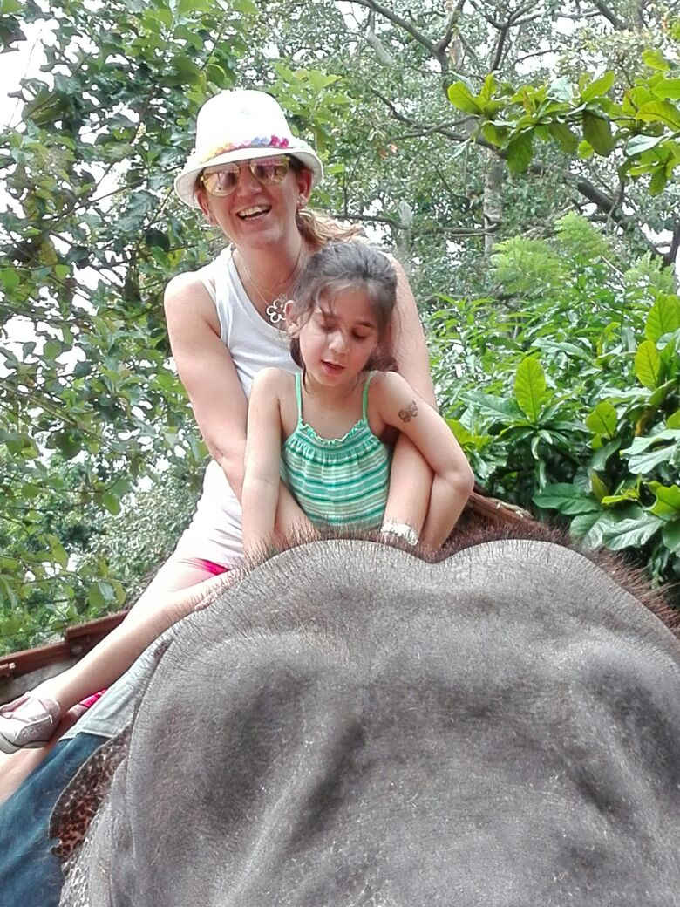
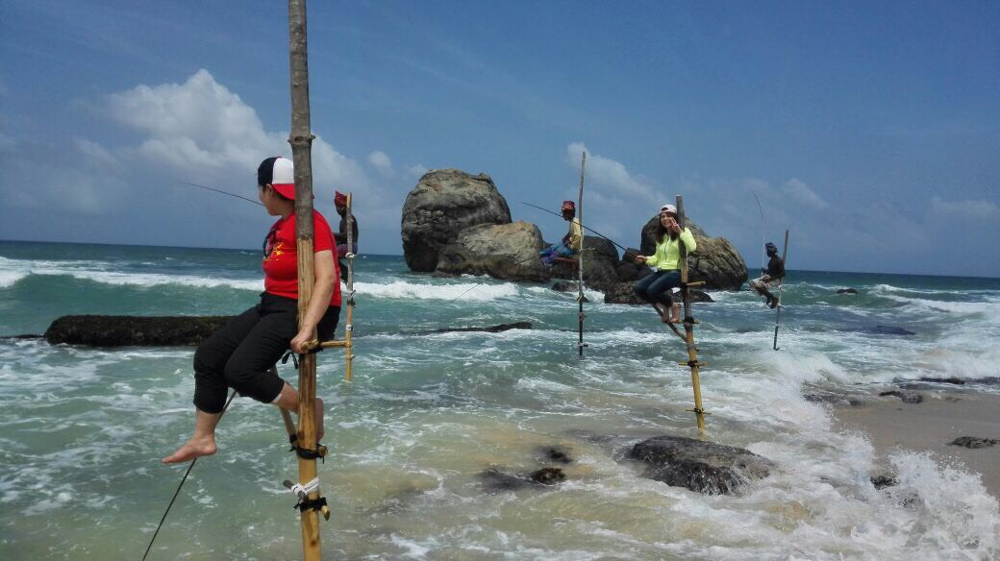
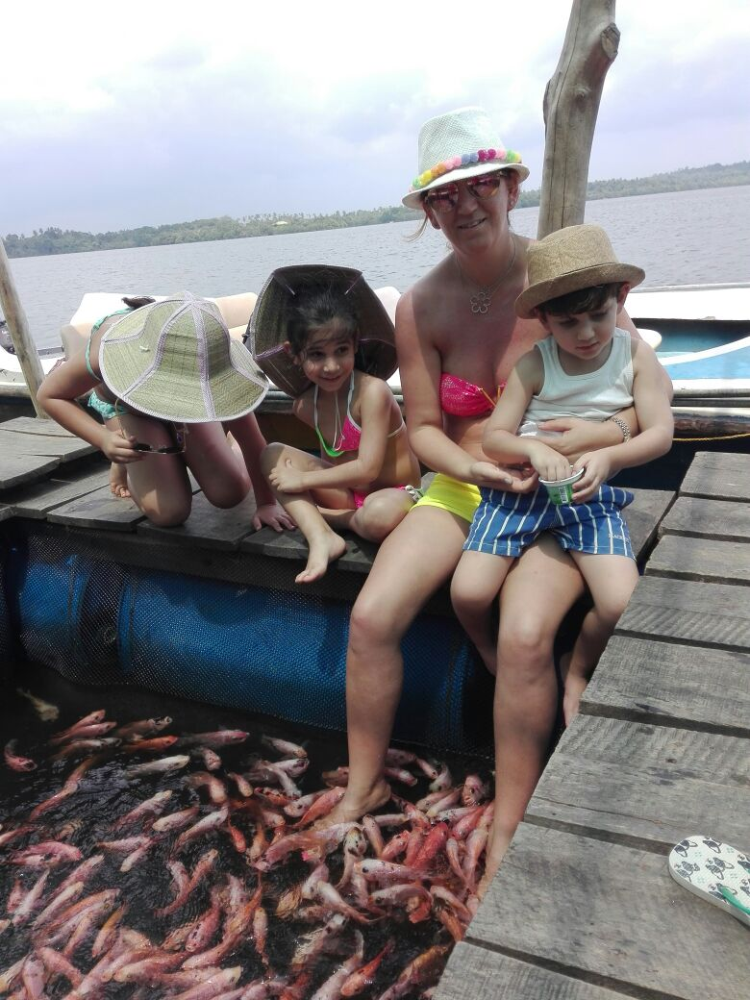
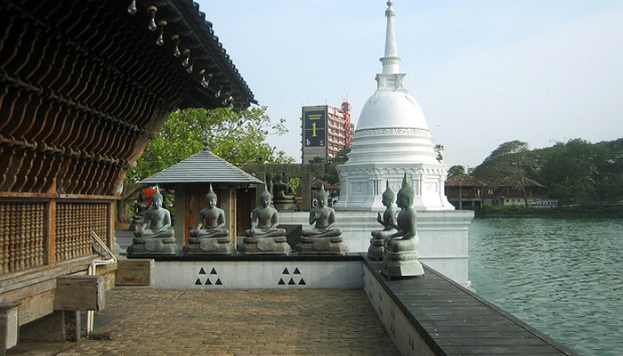
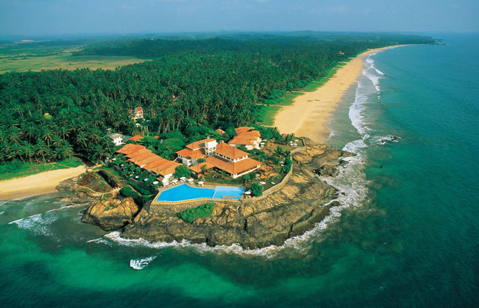
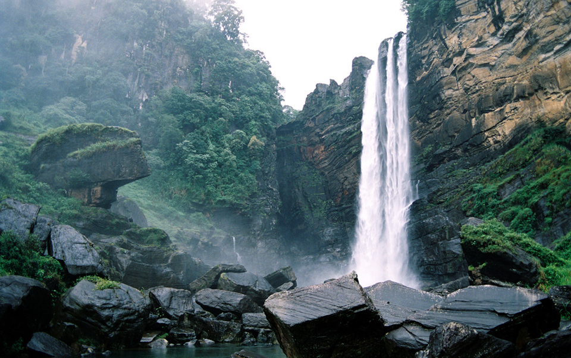

When you think of a holiday in Sri Lanka, the first thing that comes to our mind is the gorgeous palm fringed beaches of Sri Lanka, the lush green tropical landscapes and the hospitality of the Sri Lankan people.
The soft sound of waves lapping in to the beach, endless strips of white sandy beaches contrasting with deep blue waters must be what's on your mind when you plan to travel to a beautiful tropical beach. Whether to set your spirit of adventure free or just to relax and enjoy the tranquil settings, Sri Lanka is the ideal holiday destination. Sri Lanka is endowed with so many beautiful beaches, many an idyllic setting with swaying palm trees bending over the white sand lapped by blue waves and coral reefs that are home to many types of tropical fish. As you travel along the western, eastern or southern coastline, around every bend you will come upon yet another inviting tropical vista, which testifies Sri Lanka, a tropical island as the best place to holiday.
History, Ruins, Herbal(Ayurwerdic) Treatments , Village Safari & Elephant Safari
About
Little Information About Our Journey.
Qualified for tourists guide
Lisenced from SriLankan Government
March 2011
An Agency is Born
December 2014
Transition to Full Service
December 2016
Phase Two Expansion
Be Part
Of Our
Story Sri Lanka!
Gallery
Sweet Memories.



Comment Box
Traveller Experiences With Us
{{comment.Name}}
{{comment.Comment}}
Post Your Experience Here
Our Amazing Team
SriLankan Best Team to Guide You & Travel With You!!!
D.M.S Kumarasiri
Cheif Guide
Hashan Damith
Guide
Chathuranga
Guide
Nuwan
Guide
Mahesh
Guide
Sri Lankan Best Team to guide you!!!!
Contact Us
Whatsapp
+94772397702
Viber
+94772397702
Email
getwintours@gmail.com
Colombo
Capital city in Sri Lanka
Colombo, the capital of Sri Lanka, has a long history as a port on ancient east-west trade routes, ruled successively by the Portuguese, Dutch and British. That heritage is reflected in its its architecture, mixing colonial buildings with high-rises and shopping malls. The imposing Colombo National Museum, dedicated to Sri Lankan history, borders sprawling Viharamahadevi Park and its giant Buddha.
The vibrant, jam-packed Pettah bazaar district's thousands of vendors offer everything from spices and tea to textiles and jewelry. Galle Face Green is an oceanside promenade popular for picnicking and strolling. The city's diverse religious landmarks range from the ornate, red-and-white-striped Jami Ul-Alfar Mosque and the historic Dutch Reformed Wolvendaal Church to the Buddhist Gangaramaya Temple complex. International matches of cricket, Sri Lanka's national passion, are played at Premadasa Stadium. The city is also a major hopping-off point for beaches in the island nation's south.
Galleface Green
Beaches & Leasure
The Galle Face is a 5 ha (12 acres) ocean-side urban park, which stretches for 500 m (1,600 ft) along the coast, in the heart of the financial and business capital of Sri Lanka, Colombo. The promenade was initially laid out in 1859 by Governor Sir Henry George Ward, although the original Galle Face Green extended over a much larger area than is seen today. The Galle Face Green was initially used for horse racing and as a golf course, but was also used for cricket, polo, football, tennis and rugby.
Gangarama Temple
History & Buddhism

Gangaramaya Temple is one of the most important temples in Colombo, Sri Lanka, being a mix of modern architecture and cultural essence.
The temple's architecture demonstrates an eclectic mix of Sri Lankan, Thai, Indian, and Chinese architecture.[1]
This Buddhist temple includes several imposing buildings and is situated not far from the placid waters of Beira Lake on a plot of land that was originally a small hermitage on a piece of marshy land. It has the main features of a Vihara (temple), the Cetiya (Pagada) the Bodhitree, the Vihara Mandiraya, the Seema malaka (assembly hall for monks) and the Relic Chamber. In addition, a museum, a library, a residential hall, a three storeyed Pirivena, educational halls and an alms hall are also on the premises.
Most notable for tourists is the architecture of the Simamalaka Shrine, which was built with donations from a Muslim sponsor to the design of Geoffrey Bawa.
Kelaniya Temple
History & Buddhism
The Kelaniya Raja Maha Vihara or Kelaniya Temple is a Buddhist temple in Kelaniya, Sri Lanka, seven miles from Colombo. The Chief Incumbent (Chief Priest) is Venerable Professor Kollupitiye Mahinda Sangharakkhitha Thera.
Buddhists believe the temple to have been hallowed during the third and final visit of the Lord Buddha to Sri Lanka, eight years after gaining enlightenment. Its history would thus go back to before 500 BCE.
The Mahawansa records that the original Stupa at Kelaniya enshrined a gem-studded throne on which the Buddha sat and preached.
The temple flourished during the Kotte era but much of its land was confiscated during the Portuguese empire. Under the Dutch empire, however, there were new gifts of land and under the patronage of King Kirthi Sri Rajasingha the temple was rebuilt. It was refurbished in the first half of the 20th century with the help of Helena Wijewardana.
The temple is also famous for its image of the reclining Gautama Buddha and paintings by the native artist Solias Mendis which depict important events in the life of the Buddha, in the history of Buddhism in Sri Lanka, also incidents from the Jataka tales. It is the venue for the Duruthu Maha Perehera procession each January. An 18-foot stone statue of the Bodhisattva Avalokitesvara has been erected at the temple.
Viharamahadevi Park
Parks
The Viharamahadevi Park (formerly Victoria Park) is a public park located in Colombo, next to the National Museum in Sri Lanka. It is the oldest and largest park of the Port of Colombo. Situated in front of the colonial-era Town Hall building, the park is named after Queen Viharamahadevi, the mother of King Dutugamunu. The park was built on land donated to the Colombo city by Charles Henry de Soysa during the British rule of Sri Lanka, and used to be named "Victoria Park" after Queen Victoria. During World War II it was occupied by the British Army with Australian 17th Brigade based at Victoria Park. After the war the park was restored and open to the public in 1951.
There used to be a cricket ground in the park, which was used for first-class cricket between 1927 and 1995. Ceylon played against a touring English team there in 1927 and against an Australian team in 1935.The park features include a huge Buddha statue and a series of water fountains. It also includes a mini zoo, a children's play area and a BAC Jet Provost.[2]
The Viharamahadevi Park is the only large-scale public park in Colombo, and is maintained by the Colombo Municipal Council. Located at its western end is the Cenotaph War Memorial, Colombo and the Colombo Public Library. The Vihara Maha Devi Park Open Air Stadium is a venue for concerts and public events.
Kandy
Temple of the tooth,Heritage & history
Kandy is a large city in central Sri Lanka. It's set on a plateau surrounded by mountains, which are home to tea plantations and biodiverse rainforest. The city's heart is scenic Kandy Lake (Bogambara Lake), which is popular for strolling. Kandy is famed for sacred Buddhist sites, including the Temple of the Tooth (Sri Dalada Maligawa) shrine, celebrated with the grand Esala Perahera annual procession.
Sri Dalada Maligawa or the Temple of the Sacred Tooth Relic is a Buddhist temple in the city of Kandy, Sri Lanka. It is located in the royal palace complex of the former Kingdom of Kandy, which houses the relic of the tooth of the Buddha. Since ancient times, the relic has played an important role in local politics because it is believed that whoever holds the relic holds the governance of the country. Kandy was the last capital of the Sri Lankan kings and is a World Heritage Site mainly due to the temple.
Bhikkhus of the two chapters of Malwatte and Asgiriya conduct daily worship in the inner chamber of the temple. Rituals are performed three times daily: at dawn, at noon and in the evenings. On Wednesdays there is a symbolic bathing of the relic with an herbal preparation made from scented water and fragrant flowers called Nanumura Mangallaya. This holy water is believed to contain healing powers and is distributed among those present.
The temple sustained damage from bombings by the Liberation Tigers of Tamil Eelam in 1998 but was fully restored each time.
Near the Temple of the Tooth is the National Museum, housed in a former palace, with exhibits showcasing Kandy's role as the last kingdom of Sri Lanka. In the nearby Peradeniya suburb, the Royal Botanic Gardens is known for its orchid collection and massive palm trees. The Ceylon Tea Museum, in a former tea factory, has a library and exhibits that explore Sri Lanka's history as a major exporter of the beverage. Kandy is also a gateway to the Knuckles Mountains, a popular destination for hiking and camping.
Kandian Dance
Tradition
Botanical Garden
Parks
Gem Museum
Heritage
Spice and Herbal Garden
Heritage
Yaala National Park
Safaris,Lepards,Elephants & Camping
Yaala National Park is the most visited and second largest national park in Sri Lanka. The park consists of five blocks, two of which are now open to the public, and also adjoining parks. The blocks have individual names such as, Ruhuna National Park and Kumana National Park or 'Yala East' for the adjoining area. It is situated in the southeast region of the country, and lies in Southern Province and Uva Province. The park covers 979 square kilometres and is located about 300 kilometres from Colombo. Yala was designated as a wildlife sanctuary in 1900, and, along with Wilpattu was one of the first two national parks in Sri Lanka, having been designated in 1938. The park is best known for its variety of wild animals. It is important for the conservation of Sri Lankan elephants, Sri Lankan leopards and aquatic birds. There are six national parks and three wildlife sanctuaries in the vicinity of Yala. Among the largest is Lunugamvehera National Park. The park is situated in the dry semi-arid climatic region and rain is received mainly during the northeast monsoon. Yala hosts a variety of ecosystems ranging from moist monsoon forests to freshwater and marine wetlands.
Jeep Safari
Lephards
Galle
Lighthouses, Whale watching, Beaches, History & Turtles
Galle is a major city in Sri Lanka, situated on the southwestern tip, 119 km from Colombo. Galle is the administrative capital of Southern Province, Sri Lanka and is the district capital of Galle District. Galle was known as Gimhathiththa before the arrival of the Portuguese in the 16th century, when it was the main port on the island. Galle reached the height of its development in the 18th century, during the Dutch colonial period. Galle is the best example of a fortified city built by the Portuguese in South and Southeast Asia, showing the interaction between Portuguese architectural styles and native traditions. The city was extensively fortified by the Dutch during the 17th century from 1649 onwards. The Galle fort is a world heritage site and is the largest remaining fortress in Asia built by European occupiers. Other prominent landmarks in Galle include the city's natural harbor, the National Maritime Museum, St. Mary's Cathedral founded by Jesuit priests, one of the main Shiva temples on the island, and Amangalla the historic luxury hotel.
Galle Fort
Unawatuna Beach
Mirissa Beach
Hikkaduwa Beach
Benthota Beach

Sea Food Restuarant
Nuwara Eliya
Waterfalls, Gardens, Tea States, Golf & Honeymoon
Nuwara Eliya is a city in the hill country of the Central Province, Sri Lanka. Its name means "city on the plain" or "city of light". The city is the administrative capital of Nuwara Eliya District, with a picturesque landscape and temperate climate. It is at an altitude of 1,868 m and is considered to be the most important location for tea production in Sri Lanka. The city is overlooked by Pidurutalagala, the tallest mountain in Sri Lanka. Nuwara Eliya is known for its temperate, cool climate the coolest area in Sri Lanka.
Tea Plantation & Factory
Tea states
Pink Post Office
Gregory Lake
Waterfalls

Anuradhapura
Ruins,History,Templeas & Buddhism
Anuradhapura is a major city in Sri Lanka. It is the capital city of North Central Province, Sri Lanka and the capital of Anuradhapura District. Anuradhapura is one of the ancient capitals of Sri Lanka, famous for its well-preserved ruins of an ancient Sri Lankan civilization. It was the third capital of the Kingdom of Rajarata, following the kingdoms of Tambapanni and Upatissa Nuwara. The city, now a UNESCO World Heritage Site, was the center of Theravada Buddhism for many centuries. The city lies 205 km north of the current capital Colombo in Sri Lanka's North Central Province, on the banks of the historic Malvathu Oya. It is one of the oldest continuously inhabited cities in the world and one of the eight World Heritage Sites of Sri Lanka. It is believed that from the fourth century BC until the beginning of the 11th century AD it was the capital of the Sinhalese. During this period it remained one of the most stable and durable centers of political power and urban life in South Asia. The ancient city, considered sacred to the Buddhist world, is today surrounded by monasteries covering an area of over sixteen square miles.
ATAMASTHANA(8 Places)
(1)Jaya Sri Maha Bodhiya
History,Temples & Buddhism
Jaya Sri Maha Bodhi is a Sacred Fig tree in the Mahamewna Gardens, Anuradhapura, Sri Lanka. It is said to be the right-wing branch (southern branch) from the historical Sri Maha Bodhi at Buddha Gaya in India under which Lord Buddha attained Enlightenment. It was planted in 288 BC,[1][2][3] and is the oldest living human-planted tree in the world with a known planting date.[4] Today it is one of the most sacred relics of the Buddhists in Sri Lanka and respected by Buddhists all over the world.
(2)Ruwanwelisaya
History,Temples & Buddhism
The Ruwanwelisaya is a stupa in Sri Lanka, considered a marvel for its architectural qualities and sacred to many Buddhists all over the world.It was built by King Dutugemunu c. 140 B.C., who became lord of all Sri Lanka after a war in which the Chola King Elara, was defeated. It is also known as Mahathupa, Swarnamali Chaitya, Suvarnamali Mahaceti (in Pali) and Rathnamali Dagaba.
This is one of the Solosmasthana (the 16 places of veneration) and the Atamasthana (the 8 places of veneration in the ancient sacred city of Anuradhapura). The stupa is one of the world's tallest monuments, standing at 103 m (338 ft) and with a circumference of 290 m (951 ft).The Kaunghmudaw Pagoda in Sagaing, Myanmar is modeled after this stupa.
The stupa was an ancient ruin in the 19th century. After fundraising efforts by Sinhalese bhikkhu, the stupa was renovated in the early 20th century. The Ruwanveli Seya Restoration Society was founded in 1902 and the final crowning of the stupa took place on 17 June 1940.
(3)Thuparamaya
History,Temples & Buddhism
Thuparamaya is a dagoba in Anuradhapura, Sri Lanka. It is a Buddhist sacred place of veneration.
Mahinda Thera, an envoy sent by King Ashoka himself introduced Theravada Buddhism and also chetiya worship to Sri Lanka. At his request King Devanampiyatissa built Thuparamaya in which was enshrined the collarbone of the Buddha. It is considered to be the first dagaba built in Sri Lanka following the introduction of Buddhism. This is considered the earliest monument, the construction of which was chronicled Sri Lanka. The name Thuparamaya comes from "stupa" and "aramaya" which is a residential complex for monks.
Thuparamaya dagoba has been built in the shape of a bell. This dagoba was destroyed from time to time. During the reign of King Agbo II it was completely destroyed and the King restored it. What is seen presently is the construction of the dagoba, done in 1862 AD. As of today, after several renovations, in the course of the centuries, the monument has a diameter of 59 ft (18 m), at the base. The dome is 11 feet 4 inches (3.45 m) in height from the ground, 164 12 ft (50.1 m) in diameter. The compound is paved with granite and there are 2 rows of stone pillars round the dagaba. During the early period a vatadage was built round Thuparamaya.
(4)Lovamahapaya
History,Temples & Buddhism
Lovamahapaya is a building situated between Ruwanweliseya and Sri Mahabodiya in the ancient city of Anuradhapura, Sri Lanka. It is also known as the Brazen Palace or Lohaprasadaya because the roof was covered with bronze tiles.
In ancient times, the building included the refectory and the uposathagara (Uposatha house). There was also a Simamalake where the Sangha assembled on Poya days to recite the sutra of the confessional. The famous Lohaprasada built by King Dutugemunu, described as an edifice of nine stories, was a building of this class. One side of the building was 400 ft (120 m) in length. There are 40 rows, each row consisting of 40 stone pillars, for a total of 1600 pillars. It is believed that it took six years for the construction of the building and the plan was brought from the heavens. The building was completely destroyed during the reign of King Saddhatissa.
Whilst the Jetavanaramaya, Abhayagiriya and Ruwanwelisaya were taller structures, the Lovamahapaya remained the tallest building of the island for over a millennium between 155BC and 993AD. The small building displayed now is a recent construction and is the Venue of Uposatha (chapter house) of the Maha Vihara even now.
(5)Abhayagiri Dagaba
History,Temples & Buddhism
Abhayagiri Vihra was a major monastery site of Mahayana, Theravada and Vajrayana Buddhism that was situated in Anuradhapura, Sri Lanka. It is one of the most extensive ruins in the world and one of the most sacred Buddhist pilgrimage cities in the nation. Historically it was a great monastic centre as well as a royal capital, with magnificent monasteries rising to many stories, roofed with gilt bronze or tiles of burnt clay glazed in brilliant colors. To the north of the city, encircled by great walls and containing elaborate bathing ponds, carved balustrades and moonstones, stood "Abhayagiri", one of seventeen such religious units in Anuradhapura and the largest of its five major viharas. One of the focal points of the complex is an ancient stupa, the Abhayagiri Dagaba. Surrounding the humped dagaba, Abhayagiri Vihara was a seat of the Northern Monastery, or Uttara Vihara and the original custodian of the Tooth relic in the island.
The term "Abhayagiri Vihara" means not only a complex of monastic buildings, but also a fraternity of Buddhist monks, or Sangha, which maintains its own historical records, traditions and way of life. Founded in the 2nd century BC, it had grown into an international institution by the 1st century AD, attracting scholars from all over the world and encompassing all shades of Buddhist philosophy. Its influence can be traced to other parts of the world, through branches established elsewhere. Thus, the Abhayagiri Vihara developed as a great institution visavis the Mahavihara and the Jetavana Buddhist monastic sects in the ancient Sri Lankan capital of Anuradhapura.
(6)Jetavanaramaya
History,Temples & Buddhism
The Jetavanaramaya is a stupa located in the ruins of Jetavana in the sacred world heritage city of Anuradhapura, Sri Lanka. Mahasena of Anuradhapura (273301) initiated the construction of the stupa following the destruction of the mahavihara. His son Maghavanna I completed the construction of the stupa.[1] A part of a sash or belt tied by the Buddha is believed to be the relic that is enshrined here.
The structure is significant in the island's history for it represents the tensions within the Theravada and Mahayana sects of Buddhism; it is also significant in recorded history as one of the tallest structures in the ancient world; and the second tallest non-pyramidal buildings after Pharos (lighthouse) of Alexandria; the height of the stupa is 400 feet (122 m), making it the tallest stupa in the ancient world. The structure is no longer the tallest, but it is still the largest, with a base-area of 233,000 m2 (2,508,000 sq ft). Approximately 93.3 million baked bricks were used in its construction; the engineering ingenuity behind the construction of the structure is a significant development in the history of the island. The sectarian differences between the Buddhist monks also are represented by the stupa as it was built on the premises of the destroyed mahavihara, which led to a rebellion by a minister of King Mahasena.
This stupa belongs to the Sagalika sect. The compound covers approximately 5.6 hectares and is estimated to have housed 10,000 Buddhist monks. One side of the stupa is 576 ft (176 m) long, and the flights of stairs at each of the four sides of it are 28 ft (9 m) wide. The doorpost to the shrine, which is situated in the courtyard, is 27 ft (8 m) high. The stupa has a 8.5 m (28 ft) deep foundation, and sits on bedrock. Stone inscriptions in the courtyard give the names of people who donated to the building effort.
(7)Mirisaveti Stupa
History,Temples & Buddhism
The Mirisaveti Stupa (Sinhalese: , Mirisaviya) is situated in the ancient city of Anuradhapura, Sri Lanka.[1] King Dutugamunu (161 BC to 137 BC) built the Mirisaveti Stupa after defeating King Elara. After placing the Buddha relics in the sceptre, he had gone to Tissa Wewa for a bath leaving the sceptre. After the bath he returned to the place where the sceptre was placed, and it is said that it could not be moved. The stupa was built in the place where the sceptre stood. It is also said that he remembered that he partook a chilly curry without offering it to the sangha. In order to punish himself he built the Mirisavetiya Dagaba. The extent of this land is about 50 acres (20 ha). Although the king Kasyapa I and Kasyapa V renovated this, from time to time it was dilapidated. What stands today is the renovation done by the cultural Triangle Fund.
(8)Lankarama
History,Temples & Buddhism
Lankarama is a stupa built by King Valagamba, in an ancient place at Galhebakada in the ancient kingdom of Anuradhapura, Sri Lanka. Nothing is known about the ancient form of the stupa, and later this was renovated. The ruins show that there are rows of stone pillars and it is no doubt that there has been a house built encircling the stupa (vatadage) to cover it. The round courtyard of the stupa seems to be 10 feet (3 m) above the ground. The diameter of the stupa is 45 feet (14 m). The courtyard is circular in shape and the diameter is 1332 feet (406 m).
(9)Twin Ponds
History
One of the best specimen of bathing tanks or pools in ancient Sri Lanka is the pair of pools known as Kuttam Pokuna (Twin Ponds/Pools). The said pair of pools were built by the Sinhalese in the ancient kingdom of Anuradhapura. These are considered one of the significant achievements in the field of hydrological engineering and outstanding architectural and artistic creations of the ancient Sinhalese.
(10)Samadhi Statue
History
The Samadhi Statue is a statue situated at Mahamevnwa Park in Anuradhapura, Sri Lanka. The Buddha is depicted in the position of the Dhyana Mudra, the posture of meditation associated with his first Enlightenment. Whether the Buddha's Enlightenment was the experience technically called samadhi, or some other phenomenon, may depend upon the philosophical allegiance of the believer. In the Dhyana Mudra the Buddha sits cross-legged with his upturned palms placed one over the other on his lap. This position is universally known throughout the Buddhist world, and this statue is therefore one of the most typical pieces of Buddhist sculpture. It is not to be confused with the very similar "Earth-Touching Mudra," which depicts the simple action the Buddha took to fend off the illusions projected by Mara, who was desperate to prevent the Buddha from realizing that his, Mara's, projections, and with them the entire world, are an illusion. This statue is 8 feet in height and carved from granite.
Jaffna
Beaches & hindu temples
Jaffna is the capital city of the Northern Province of Sri Lanka. It is the administrative headquarters of the Jaffna district located on a peninsula of the same name. With a population of 88,138, Jaffna is Sri Lanka's 12th largest city. Jaffna is approximately six miles away from Kandarodai which served as a famous emporium in the Jaffna peninsula from classical antiquity. Jaffna's suburb, Nallur served as the capital of the four centuries-long medieval Jaffna kingdom. Prior to the Sri Lankan civil war, it was Sri Lanka's second most populated city after the commercial capital Colombo. The 1980s insurgent uprising led to extensive damage, expulsion of part of the population, and military occupation. Since the end of civil war in 2009, refugees and internally displaced people have started to return to their homes and government and private sector reconstruction has begun. Historically, Jaffna has been a contested city. It was made into a colonial port town during the Portuguese occupation of the Jaffna peninsula in 1619. The Dutch, took it from the Portuguese, only to lose it to the British in 1796.
Minneriya National Park
Elephants,Safaris,Parks and Camping
Minneriya national park is located 182 kms away from Colombo, in the North Central Plains of Sri Lanka. The major city closest to Minneriya National Park is Polonnaruwa. The recently renovated, the ancient Minneriya Rainwater Reservoir irrigates a considerable area of the district of Polonnaruwa and is the focal point of the Minneriya National Park. May to October is the best period to visit Minneriya National Park in view of the famous Gathering of the wild elephant herds. The gathering is documented as the largest known meeting place of Asian Elephants in the world. During the dry season of August to September each year, herds up to 300 elephants are seen within a few square kilometers of the vast Minneriya Reservoir. This Elephant Gathering is a thrilling spectacle that would be remembered for rest of the life of all those who were fortunate enough to witness it. 24 species of mammals and over 170 species of birds have been recorded here and out Of the 25 species of reptiles recorded in the park 8 are endemic.
Safari camping in Sri Lanka is an ideal way to savour the splendour of the island from one of the many spots available for such camps. The game reserves of Sri Lanka are best savoured from such a camp than trudging up and down from a hotel! You may select a tour from a wide range of tours or enjoy one tailor made just for you. Observing nature and its diversity is best done in our opinion in one such camps, whether its fauna, flora, bird watching or even interacting with the local indigenous people Veddhas.
Polonnaruwa
History, Buddhism & Ancient
While Vijayabahu's victory and shifting of kingdoms to the more strategic Polonnaruwa is considered significant, the real "Hero of Polonnaruwa" of the history books is actually Parakramabahu I. It was his reign that is considered the Golden Age of Polonnaruwa. Trade and agriculture flourished under the patronage of the king, who was so adamant that no drop of water falling from the heavens was to be wasted and each was to be used toward the development of the land. Hence, irrigation systems that are far superior to those of the Anuradhapura Age were constructed during Parakramabahu's reign - systems which to this day supply the water necessary for paddy cultivation during the scorching dry season in the east of the country. The greatest of these systems is the Parakrama Samudra or the Sea of Parakrama. The Kingdom of Polonnaruwa was completely self-sufficient during King Parakramabahu's reign.
With the exception of his immediate successor, Nissankamalla I, all other monarchs of Polonnaruwa were slightly weak-willed and rather prone to picking fights within their own court.[citation needed] They also went on to form more intimate matrimonial alliances with stronger South Indian kingdoms until these matrimonial links superseded the local royal lineage. This prompted an invasion by the Aryacakravarti dynasty King Kalinga Magha in 1214, who founded the Jaffna kingdom (1215-1624 CE). Local power passed into the hands of a Pandyan dynasty king following the Jaffna kingdom invasion of Lanka in 1284, who moved their capital to Dambadeniya. Polonnaruwa was also called Jananathamangalam during this brief period under the Pandya.
Gal Viharaya
History,Temples & Buddhism
The Gal Vihara, also known as Gal Viharaya and originally as the Uttararama, is a rock temple of the Buddha situated in the ancient city of Polonnaruwa in North Central Province, Sri Lanka. It was fashioned in the 12th century by Parakramabahu I. The central feature of the temple is four rock relief statues of the Buddha, which have been carved into the face of a large granite rock. The images consist of a large seated figure, another smaller seated figure inside an artificial cavern, a standing figure and a reclining figure. These are considered to be some of the best examples of ancient Sinhalese sculpting and carving arts, and have made the Gal Vihara the most visited monument at Polonnaruwa.
The images of Uttararama follow a different style from the images of the previous Anuradhapura period, and show some significant differences. The identity of the standing image is subject to a certain amount of dispute among historians and archaeologists, some of whom argue that it depicts the monk Ananda rather than the Buddha. Each of the images have been carved in a way that uses a maximum possible area of the rock, and their heights seem to have been decided based on the height of the rock itself. Each statue appears to have had its own image house, as indicated by the remains of brick walls at the site. The Uttararama was where Parakramabahu I held a congregation of monks to purify the Buddhist priesthood, and later drew up a code of conduct for them. This code of conduct has been recorded in an inscription on the same rock face containing the images of the Buddha.
Parakrama Samudraya
History
Parakrama Samudra (or King Parakrama's sea or the Sea of King Parakrama) is a shallow reservoir, consisting of three separate reservoirs connected by narrow channels in Polonnaruwa, Sri Lanka.
The northernmost reservoir is the oldest and referred to as Topa wewa (Sinhalese wewa = lake or reservoir) built around 386. The middle section Eramudu wewa and the southernmost portion, at the highest elevation, is Dumbutula wewa, both sections were added and the reservoir expanded during the reign of King Parkramabhu I.
Royal Palace
History & Ruins
The Royal Palace constructed by Parakramabahu I was a magnificent structure measuring 31m by 13m, and is said to have had seven storeys. Today its crumbling remains look like giant cavity-ravaged molars.
The 3m-thick walls have holes to receive the floor beams for two higher floors; however, if there were another four levels, these must have been made of wood. The roof in this main hall, which had 50 rooms in all, was supported by 30 columns.
Vatadagaya
History, Ruins & Buddhism
The Polonnaruwa Vatadage is an ancient structure dating back to the Kingdom of Polonnaruwa of Sri Lanka. It is believed to have been built during the reign of Parakramabahu I to hold the Relic of the tooth of the Buddha or during the reign of Nissanka Malla of Polonnaruwa to hold the alms bowl used by the Buddha. Both these venerated relics would have given the structure a great significance and importance at the time. Located within the ancient city of Polonnaruwa, it is the best preserved example of a vatadage in the country, and has been described as the "ultimate development" of this type of architecture. Abandoned for several centuries, excavation work at the Polonnaruwa Vatadage began in 1903.
Built for the protection of a small stupa, the structure has two stone platforms decorated with elaborate stone carvings. The lower platform is entered through a single entrance facing the north, while the second platform can be accessed through four doorways facing the four cardinal points. The upper platform, surrounded by a brick wall, contains the stupa. Four Buddha statues are seated around it, each facing one of the entrances. Three concentric rows of stone columns had also been positioned here, presumably to support a wooden roof. The entire structure is decorated with stone carvings. Some of the carvings at the Polonnaruwa Vatadage, such as its sandakada pahanas, are considered to be the best examples of such architectural features. Although some archaeologists have suggested that it also had a wooden roof, this theory is disputed by others.
Kithulgala
Rafting, Adventure & Rainforests
Kitulgala is a small town in the west of Sri Lanka. It is in the wet zone rain forest, which gets two monsoons each year, and is one of the wettest places in the country. Nevertheless, it comes alive in the first three months of the year, especially in February, the driest month. The Academy Award-winning The Bridge on the River Kwai was filmed on the Kelani River near Kitulgala, although nothing remains now except the concrete foundations for the bridge. Kitulgala is also a base for white-water rafting, which starts a few kilometres upstream.
Ella
Waterfalls, Tea States & High Hills
Ella is a small town in the Badulla District of Uva Province, Sri Lanka governed by an Urban Council. It is approximately 200 kilometres (120 mi) east of Colombo and is situated at an elevation of 1,041 metres (3,415 ft) above sea level.[2] The area has a rich bio-diversity, dense with numerous varieties of flora and fauna. Ella is surrounded by hills covered with cloud forests and tea plantations. The town has a cooler climate than surrounding lowlands, due to its elevation. The Ella Gap allows views across the southern plains of Sri Lanka.
Little Adam's Peak
Rawana Waterfalls
Nine Arch Bridge
Sigiriya
History, Ruins, Herbal(Ayurwerdic) Treatments , Village Safari & Elephant Safari
Sigiriya or Sinhagiri (Lion Rock Sinhalese: , Tamil: , pronounced see-gi-ri-y) is an ancient rock fortress located in the northern Matale District near the town of Dambulla in the Central Province, Sri Lanka. The name refers to a site of historical and archaeological significance that is dominated by a massive column of rock nearly 200 metres (660 ft) high. According to the ancient Sri Lankan chronicle the Culavamsa, this site was selected by King Kasyapa (477 495 CE) for his new capital. He built his palace on the top of this rock and decorated its sides with colourful frescoes. On a small plateau about halfway up the side of this rock he built a gateway in the form of an enormous lion. The name of this place is derived from this structure Shgiri, the Lion Rock. The capital and the royal palace was abandoned after the king's death. It was used as a Buddhist monastery until the 14th century.
Sigiriya today is a UNESCO listed World Heritage Site. It is one of the best preserved examples of ancient urban planning.